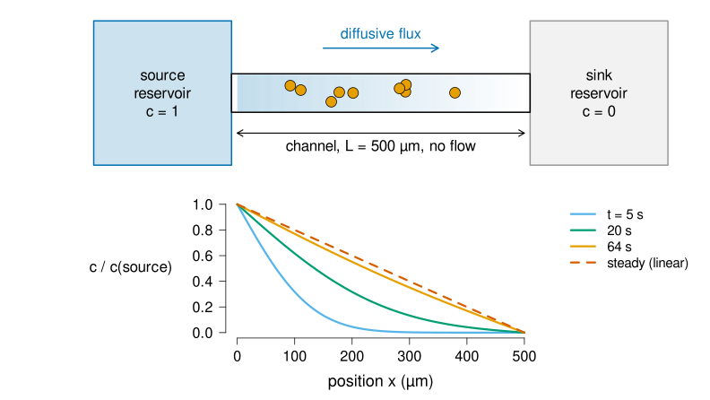
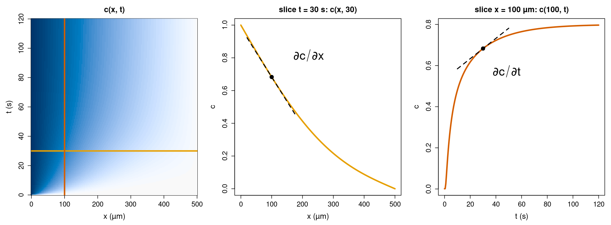
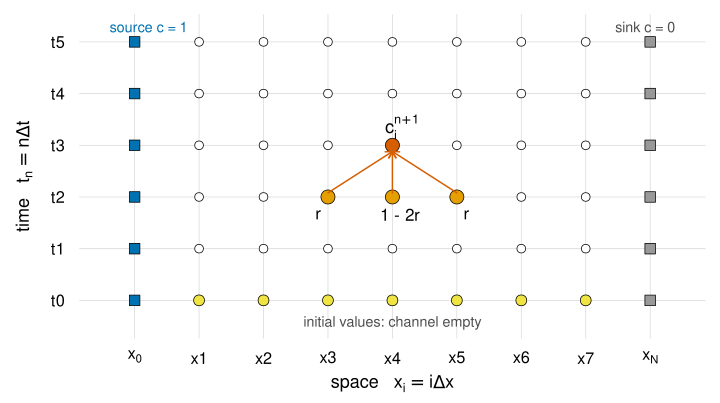
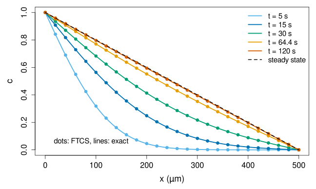
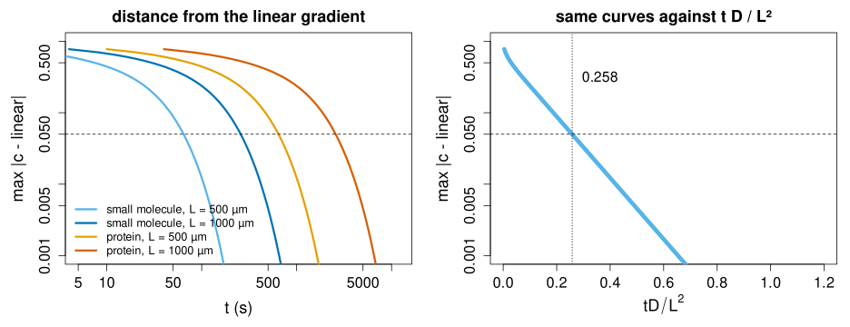
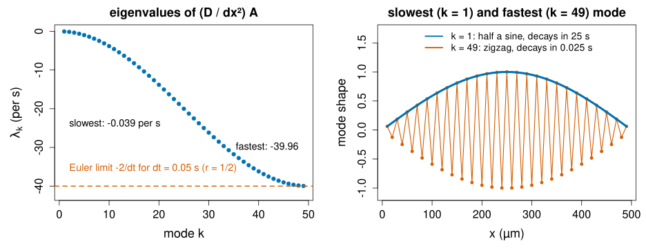
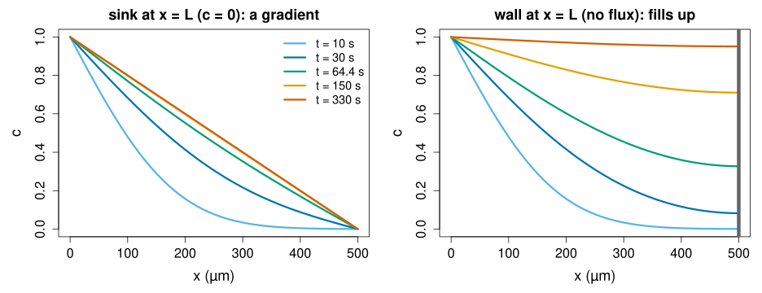

The diffusion (heat) equation by finite differences
Part 11 — Diffusion and heat: finite-difference PDEs
Numerical analysis for biologists
About this lecture
So far every unknown was a number or a list of numbers that changed in time. Inside a microfluidic chip, a concentration also changes from place to place: it is a function of space and time, c(x, t). Its model is a partial differential equation (PDE).
Fick’s law and a mass balance give the diffusion equation\partial c/\partial t = D\,\partial^2 c/\partial x^2. Heat conduction obeys the same equation.
Put x and t on a grid: the (1, -2, 1)/\Delta x^2 stencil in space, an Euler step in time. This is the FTCS scheme, five lines of code.
Stability limitD\,\Delta t/\Delta x^2 \le 1/2: break it and a zigzag explodes. It is Euler’s |1 - kh| \le 1 again, with k from the eigenvalues of the grid.
Boundary conditions: fixed concentration (a reservoir) or no flux (a wall). They change the answer completely.
Biology: a chemotaxis chamber between a source and a sink. How long until cells see a linear gradient? Why does doubling the channel length quadruple the wait?
Biology: a flow-free chemotaxis chamber

A channel joins a source reservoir (chemoattractant) to a sink reservoir (plain medium). No flow, so the molecules move only by diffusion [G1, G3].
At steady state the profile is a straight line: every cell in the channel sees the same gradient. How long until then?
Today: the stencil handles space, Euler handles time, and the stability rule comes back with k = the fastest rate on the grid.
A function of space and time

c(x, t): one number for each position and time. Hold t fixed: a profile with slope \partial c/\partial x. Hold x fixed: a time course with slope \partial c/\partial t.
Rate in − rate out, as for every ODE model, now per slice.
Concentration rises where the profile curves upward (\partial^2 c/\partial x^2 > 0) and falls where it bends down. A straight line does not change.
Heat obeys the same equation: \partial T/\partial t = \alpha\,\partial^2 T/\partial x^2, thermal diffusivity \alpha \approx 1.4\cdot10^{-7} m²/s for water. Hence “the heat equation”.
A PDE needs initial and boundary conditions
\frac{\partial c}{\partial t} = D\,\frac{\partial^2 c}{\partial x^2}, \quad 0 < x < L,\ t > 0
Initial condition: the channel is empty, c(x, 0) = 0.
Boundary conditions, one at each end:
Dirichlet (fixed value): a large reservoir holds the concentration. Source c(0, t) = 1, sink c(L, t) = 0.
No flux (Neumann): a wall, nothing crosses. J = 0, so \partial c/\partial x = 0 at the wall.
Steady state with two reservoirs: \partial^2 c/\partial x^2 = 0, so c = 1 - x/L. With a wall at x = L instead: c = 1 everywhere, no gradient at all.
The diffusion time scale L^2/D
The only time you can make from a length L and D is L^2/D:
L = 500 µm
L = 1 mm
small molecule, D = 1000 µm²/s
250 s
1000 s
protein, D = 100 µm²/s
2500 s (42 min)
10 000 s (2.8 h)
Doubling L quadruples the time; a ten times smaller D means ten times longer.
Random-walk view: after time t a molecule has moved about \sqrt{2Dt}. Over 10 µm (a cell): 0.05 s. Over 1 mm: minutes to hours.
So far this is a guess at the scale. The simulation will give the factor in front.
Space and time on a grid

Grid points x_i = i\,\Delta x (i = 0, \dots, N) and times t_n = n\,\Delta t. Unknowns c_i^n \approx c(x_i, t_n).
One ODE per grid point: 49 coupled ODEs, each linked to its two neighbours.
In matrix form \mathbf c' = \frac{D}{\Delta x^2}A\,\mathbf c + \mathbf b, with Atridiagonal: -2 on the diagonal, 1 beside it. \mathbf b holds the boundary values.
Spatial error \tfrac{\Delta x^2}{12}\,\partial^4 c/\partial x^4: second order in \Delta x.
Step 2, time: one Euler step = FTCS
Euler on these ODEs with step \Delta t gives Forward Time, Centred Space:
By hand: L = 500 µm, N = 4 (\Delta x = 125 µm), r = 0.25; start (1, 0, 0, 0, 0):
n
c_0
c_1
c_2
c_3
c_4
0
1
0
0
0
0
1
1
0 + 0.25(1 - 0 + 0) = 0.25
0
0
0
2
1
0.25 + 0.25(1 - 0.5 + 0) = 0.375
0.0625
0
0
Explicit: each new value comes straight from three old ones. Ends stay at 1 and 0. \Delta t = 0.25 \cdot 125^2/1000 = 3.9 s per step.
FTCS in R
D <-1000# µm^2/s (1e-9 m^2/s)L <-500; N <-50; dx <- L / N # 51 points, 10 µm apartx <-seq(0, L, by = dx)r <-0.4; dt <- r * dx^2/ D # 0.04 sftcs <-function(c, r, nsteps) { i <-2:(length(c) -1) # interior pointsfor (k inseq_len(nsteps)) c[i] <- c[i] + r * (c[i -1] -2* c[i] + c[i +1]) c}c60 <-ftcs(c(1, rep(0, N)), r, 60/ dt) # 1500 steps to 60 sround(c60[seq(1, 51, by =10)], 3) # x = 0, 100, ..., 500# [1] 1.000 0.765 0.543 0.343 0.165 0.000
Vectorised over space: c[i - 1], c[i], c[i + 1] are shifted copies. The loop over time stays.
The gradient forms

FTCS (dots) on top of the exact solution (lines). After about a minute the profile is close to the straight line.
When is the gradient established?
Criterion: the profile is within 5 % (of the source concentration) of the line 1 - x/L.
t_grad <-function(D, L, N =50, r =0.4) { dx <- L / N; dt <- r * dx^2/ D; x <-seq(0, L, by = dx) c <-c(1, rep(0, N)); n <-0while (max(abs(c - (1- x / L))) >0.05) { c <-ftcs(c, r, 1); n <- n +1 }c(D = D, L = L, steps = n, t = n * dt, L2_D = L^2/ D)}rbind(t_grad(1000, 500), t_grad(1000, 1000), t_grad(100, 500), t_grad(100, 1000))# D L steps t L2_D# [1,] 1000 500 1611 64.44 250# [2,] 1000 1000 1611 257.76 1000# [3,] 100 500 1611 644.40 2500# [4,] 100 1000 1611 2577.60 10000
Small molecule, 500 µm: 1 minute. Protein chemokine, 1 mm: 43 minutes. Doubling L: exactly ×4.
One simulation fits all chambers

Plotted against t\,D/L^2 the four curves are one curve. The gradient is established at t \approx 0.26\,L^2/D.
Rescale \tilde x = x/L, \tilde t = tD/L^2: the equation becomes \partial c/\partial \tilde t = \partial^2 c/\partial \tilde x^2, with no parameters left.
Try it: the chamber in your browser
Check against the exact solution
For this initial and boundary data there is a Fourier-series solution:
Formula: eigenvalues of A are -4\sin^2\!\bigl(\tfrac{k\pi}{2N}\bigr), k = 1, \dots, N - 1. All negative, all real.
Euler on \mathbf c' = \frac{D}{\Delta x^2}A\mathbf c needs \Delta t\,|\lambda| \le 2 for every eigenvalue: eigenvalues from Part 5, the rule from Part 8 (Stiffness and implicit methods). The largest, \approx 4D/\Delta x^2, gives r \le 1/2.
Slow modes, fast modes, and the cost

Slowest mode: half a sine, rate \approx \pi^2D/L^2 = 0.039 per s. This is the biology (25 s time constant).
Fastest mode: the zigzag, 40 per s. It is gone in a few hundredths of a second, yet it sets the step. Ratio ≈ 1000: a stiff system (Stiffness and implicit methods).
A wall at x_N = L: \partial c/\partial x = 0. Invent a ghost pointc_{N+1} outside and set c_{N+1} = c_{N-1} (central difference of the slope = 0). The FTCS update at the wall becomes
ftcs_closed <-function(c, r, nsteps) { # wall at x = L n <-length(c); i <-2:(n -1)for (k inseq_len(nsteps)) { cn <- c[n] +2* r * (c[n -1] - c[n]) # uses old values c[i] <- c[i] + r * (c[i -1] -2* c[i] + c[i +1]) c[n] <- cn } c}
Sink or wall: a gradient or none

Sink at x = L: the straight line after ~1 minute, kept for as long as the reservoirs last.
Wall at x = L (a dead-end channel): the attractant piles up and the channel fills to c = 1. The far end reaches 0.95 only after 328 s, 5× longer, and then there is no gradient.
Before you trust a diffusion simulation
Stability: compute r = D\Delta t/\Delta x^2 before running. FTCS needs r \le 1/2, for every species (the fastest D decides).
Maximum principle: no value above the largest or below the smallest boundary/initial value. Zigzags or negative concentrations mean r is too large or there is a bug.
Steady state: the run should settle to the solution of D\,\partial^2 c/\partial x^2 = 0 (a line between two reservoirs).
Conservation: with walls at both ends the total amount must stay constant (exercise).
Grid refinement: halve \Delta x (and quarter \Delta t). Changes should shrink about 4× per halving.
Units: D in µm²/s with x in µm; 10^{-9} m²/s is 1000 µm²/s, not 1000 m²/s.
Summary
A concentration in a channel is a function of space and time, c(x, t). Fick’s law J = -D\,\partial c/\partial x plus a mass balance gives the diffusion (heat) equation\partial c/\partial t = D\,\partial^2 c/\partial x^2.
It needs an initial profile and a boundary condition at each end: fixed value (reservoir) or no flux (wall, ghost point).
FTCS: (1, -2, 1) stencil in space, Euler in time: c_i^{n+1} = c_i^n + r(c_{i-1}^n - 2c_i^n + c_{i+1}^n), r = D\Delta t/\Delta x^2. Error O(\Delta x^2) with r fixed.
Stable only for r \le 1/2: the zigzag mode has the largest eigenvalue \approx 4D/\Delta x^2; Euler’s |1 - kh| \le 1 again. Violated: an exploding zigzag; check that values stay within bounds.
Time scale L^2/D: a linear gradient takes \approx 0.26\,L^2/D: 1 minute for a small molecule over 500 µm, 43 minutes for a protein over 1 mm. Doubling L quadruples the wait. Without a sink there is no lasting gradient.